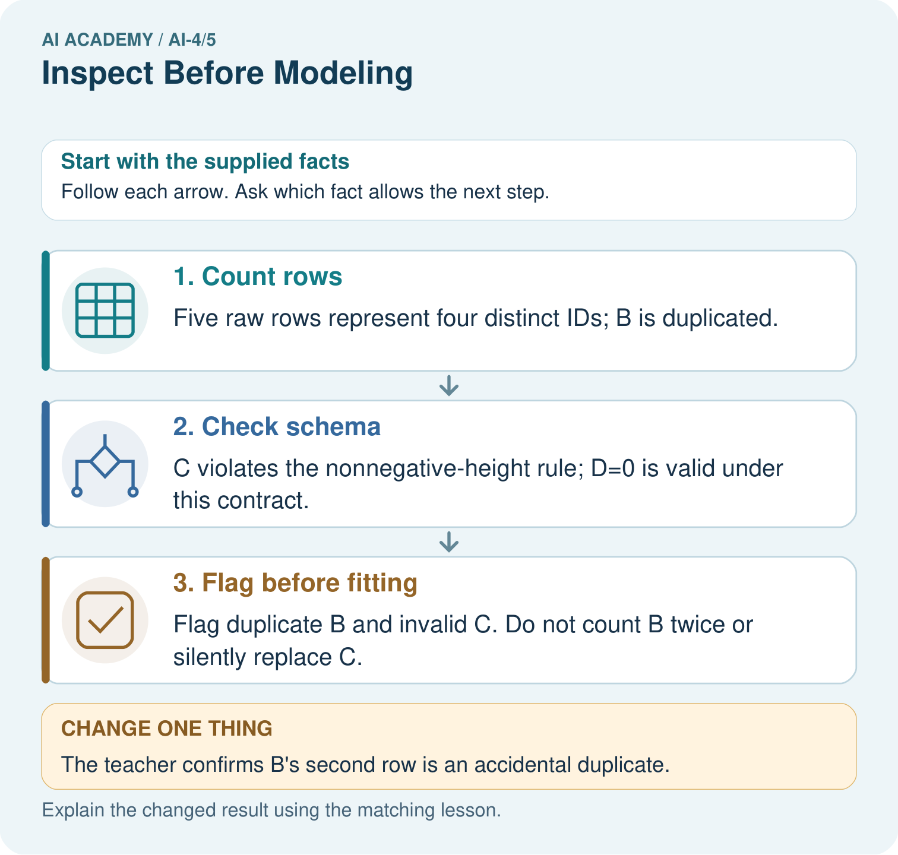
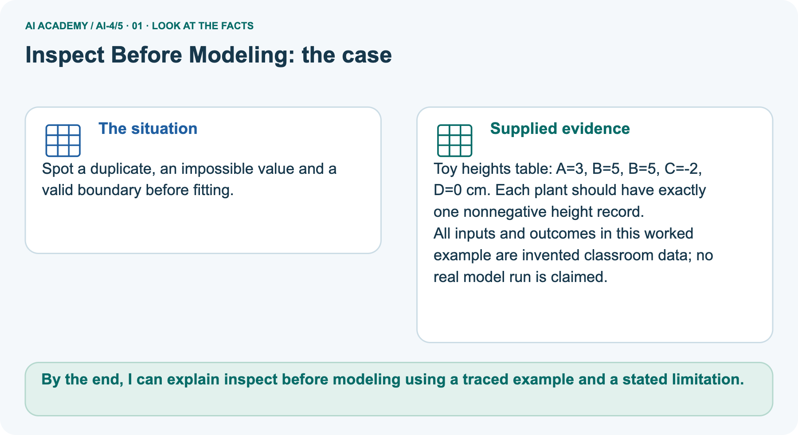
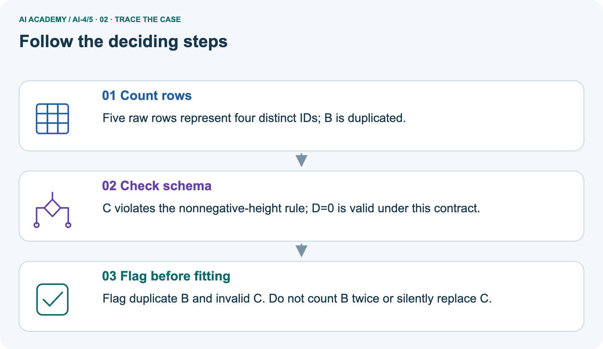
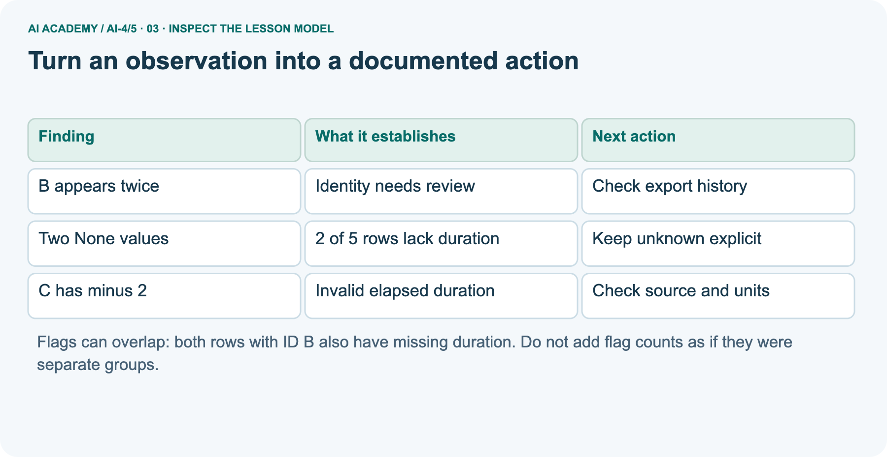
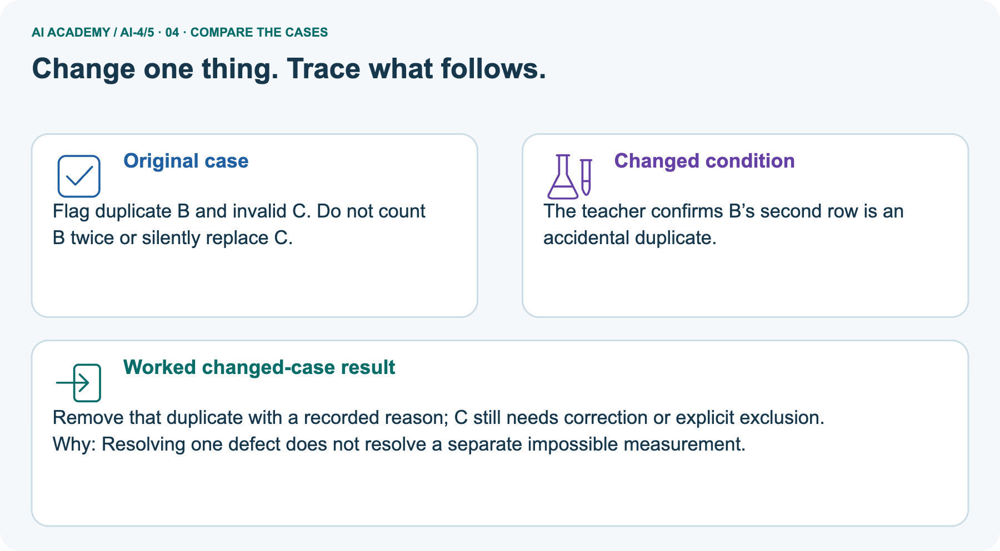
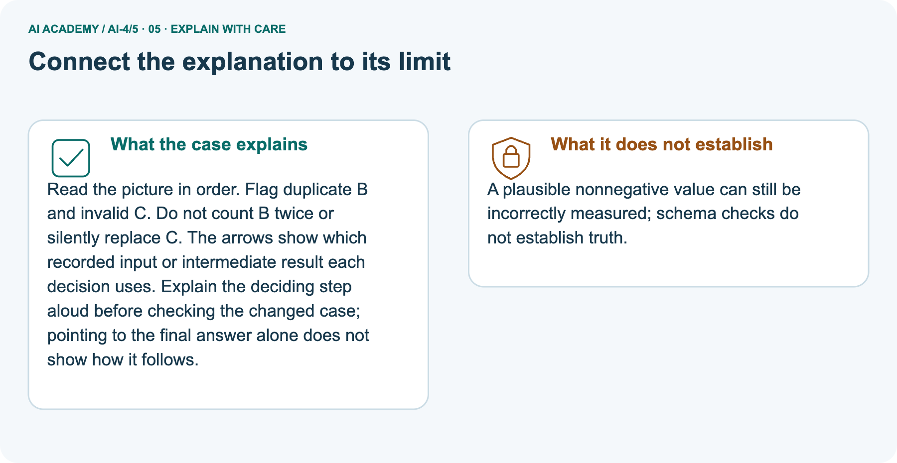
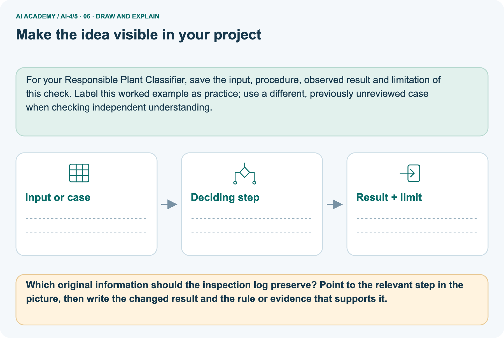

AI Academy · Level 4 · Grade 9 · Week 5 · Teacher guide
Inspect Before Modeling
Learn to understand, design, build, test and explain AI systems responsibly.
Project: Responsible Plant Classifier
Teacher guide · 1 of 9
Inspect Before Modeling
Prepare Inspect Before Modeling: check the target, prerequisites, resources and adaptable teaching schedule.
Teach the learning cycle
Primary target: Inspect row meaning missing values and repeated records
| Session | Sequence and minutes | Resources |
|---|---|---|
| Session 1 · Understand · 45 min | 0–7: recall and prerequisite; 7–15: inspect the concrete case and predict; 15–30: teacher models the worked trace; 30–40: learners explain a step using the text and visual; 40–45: check the core idea. | Sections 1–6; record the brief recall in the workbook. |
| Session 2 · Practise · 45 min | 0–5: retrieve the procedure; 5–15: W2 completion practice; 15–23: explain and check with a partner; 23–30: each learner answers the misconception check; 30–40: targeted reteaching or a harder variation; 40–45: prepare the investigation. | Sections 7–10; use the matching workbook W2 and misconception check. |
| Session 3 · Investigate and transfer · 45 min | 0–5: retrieve the decision rule; 5–20: investigate or trace; 20–30: start the independent case; 30–38: connect the project; 38–43: act on feedback; 43–45: plan the return check. | Sections 9 and 11–14. Give extra time to finish the full task set; use Section 15 when the week includes a coding lab. |
This is a starting allocation of 135 minutes, not a validated duration. Preserve all named topics. Schedule extra time for connected examples, the full investigation, independent cases and project building.
Repeated copies of a case share one recorded attempt; they are not new evidence.
Case exposure check: this source example appears in ai-4/5, ai-4/7, ai-4/9. Reuse a familiar case for recall or modelling; verify that the case used to assess transfer has not already received feedback.
Retrieval answer guidance
Python and Table Readiness
Without opening the old lesson, explain one key idea from Python and Table Readiness. Give an example and a mistake that the idea helps you avoid.
Look for: Specify a table schema
Reference example, not the only acceptable wording: activity: nonempty text; minutes: integer from 0 to 60 inclusive.
Features, Labels, Targets
Without opening the old lesson, explain one key idea from Features, Labels, Targets. Give an example and a mistake that the idea helps you avoid.
Look for: Separate prediction inputs from observed targets
Reference example, not the only acceptable wording: Candidate features are pages and queue_at_checkout.
The target is returned_late and the tracking field is loan_id. days_to_return is known only after return and directly defines the target, so it must not enter checkout predictions.
Use the student module and workbook section with this exact week title. The worked case, independent question and answers below form one aligned lesson sequence.
What the learner must demonstrate
A table contains 8 cm, -2 cm, missing and two copies of the same leaf photo. Propose a separate inspection for each issue.
Concept to explain
Dataset shape, types, ranges, duplicates, and missingness determine whether modeling results can be trusted.
| Term | Meaning |
|---|---|
| shape | number of rows and columns |
| range | smallest to largest plausible value |
| duplicate | repeated example or record |
| missingness | where values are absent |
Prepare the class
Use the supplied scenario, student illustrations and blank paper. For numeric work, offer counters or a calculator after learners show the setup. Fictional records are supplied; personal data and paid accounts are unnecessary.
Alternative compact allocation
This compact option is not the full-week schedule. Use the main teaching cycle and allow extra sessions for the investigation, independent work and project.
Allow 80 minutes: recall 8; explanation 12; worked demonstration 15; guided practice 20; independent assessment 15; project and reflection 10. Extend the lab into a second session when needed.
Preparation for the connected explanation
Teach inspection before modelling in two 45-minute sessions. Use fictional data only. Emphasize the unit of observation, provenance, units, unknown values and overlapping audit flags.
The dataset card is a concise classroom documentation exercise inspired by datasheets for datasets, not a claim to implement every part of a research framework.
Students must distinguish observations from unsupported repairs and from evidence of model fitness.
Readiness answer
It is a numerical quantity whose differences measure time. Whole-number formatting does not turn it into a category.
Printed lesson and workbook
Cards for the five raw rows including both B rows
Optional Python 3 editor; no packages required
Blank card headings: purpose source row schema findings changes limits version owner
Apply the connected idea: Units conversions and data provenance
Teach Week 15 as a two-session investigation using fictional data. Two fictional activity logs use different duration units. Log A records 180 seconds and Log B records 4 minutes.
Keep the raw values, units and source labels; derive a shared unit so another learner can reproduce the comparison. Assess the three stated outcomes through the independent task, not by copying the worked result.
Readiness answer
3 minutes, since 60 seconds make one minute.
Python 3 editor with a fresh local practice file
Paper trace table and the student workbook
Fictional input records from this lesson; no real student identifiers
End goal for the pictorial case
By the end, I can explain inspect before modeling using a traced example and a stated limitation.
This added worked case illustrates the week’s main idea. Retain all original and connected topics; schedule its practice within the teaching cycle.
Teacher guide · 2 of 9
Explain the mechanism
Model Inspect Before Modeling using the supplied case, labelled mechanism and reasoning. Make the scope of each conclusion explicit.
Trace the information, fitted behavior, and evaluation proof separately.
Question to explain
QUESTION Produce a data-quality report before fitting any model.
MODEL IDEA Dataset shape, types, ranges, duplicates, and missingness determine whether modeling results can be trusted.
PROOF NEEDED Use an unseen case, visible calculation, error analysis, and a stated limitation.
How the mechanism works
UNDER THE HOOD Dataset shape is 40 rows × 5 columns. Inspection finds 3 duplicate rows and 4 missing light values.
Draw a fresh data → model → prediction → evaluation trace:
Predict first. Then check each step. A correct answer without visible evidence cannot be audited.
Step 1
STEP 1 Dataset shape is 40 rows × 5 columns.
Step 2
STEP 2 Inspection finds 3 duplicate rows and 4 missing light values.
Step 3
STEP 3 Leaf widths range from 0.4 to 48 cm; inspect the extreme value and unit.
Step 4
STEP 4 Document, repair, or exclude by a stated rule—never silently delete inconvenient rows.
CHECK Verify the denominator, unit, split, class definition, and data version before interpreting a score.
Recalculate, retrace, or restate the evidence independently:
Concrete teaching case
The teaching case
Lengths include 5 cm, blank and -3 cm, plus a duplicate photo row.
The teaching case
Name checks and a deletion risk.
Exact explanation to model
Why the result follows
Check missingness, physical validity, units and duplicate identity. Investigate and document repair. Blind deletion can disproportionately remove a relevant condition.
Explain the added worked example
Explain the added worked example · 1
A dataset can look like a neat table and still contain missing outcomes, repeated records or impossible values. Before fitting a model, inspect what one row represents and document where the table came from.
A dataset card is a short record of its purpose, contents, collection, changes and limits. It helps another person decide whether the data suits a proposed use.
Explain the added worked example · 2
Our source is a teacher-authored fictional export called Robot practice v1, created for this lesson. Each row is intended to describe one trip, with one unique trip ID and elapsed duration in minutes.
Durations may be zero or positive; None means unknown. All trips are described as indoor practice trips. No real robot measurements or personal records were collected, and there is no evidence about outdoor performance.
Keep this raw version unchanged. At this stage a flag means investigate, not automatically delete or replace. A repeated ID might be a copied row or a problem with the supposed one-row-per-trip definition.
We need evidence before deciding what happened.
Explain the added worked example · 3
A set stores each distinct ID once. The output is 5 4 2 1: five rows, four distinct IDs, two rows with unknown duration and one row with a negative duration. There is one extra occurrence beyond the four distinct IDs.
This is not a count of all rows in repeated-ID groups: both B rows belong to that group.
The code assumes every row is a pair and each duration is a number or None. It is a small audit, not full schema validation. It does not check text values, units, source truth or whether IDs refer to real unique events.
A successful run does not certify data quality.
Key terms
| Term | Meaning |
|---|---|
| Provenance | Where data came from and how it was created |
| Schema | The stated meaning types units and rules for fields |
| Missing value | An unknown or unavailable value rather than a measured zero |
| Dataset card | A concise record of dataset contents creation intended use and limitations |
Apply the connected idea: Units conversions and data provenance
Two fictional activity logs use different duration units. Log A records 180 seconds and Log B records 4 minutes.
Keep the raw values, units and source labels; derive a shared unit so another learner can reproduce the comparison.
Apply the connected idea: Units conversions and data provenance · 4
The script prints [3.0, 4]. The slash operator returns a floating-point result. The original dictionaries are unchanged. Assume nonnegative numeric raw values have already been validated.
An unsupported unit produces None here and must be reported for review rather than included in arithmetic.
1.5 minutes and 0.0 minutes. Two minutes is longer. Exit: No. Mark it unresolved and ask for the unit definition. Do not include it as a known duration.
Model the reasoning aloud
Use the complete worked example below before asking learners to complete W2. Reveal a small part, invite a prediction, then explain the deciding step.
These teacher notes contain solutions; do not reveal the independent case answer during modelling.
Model the reasoning aloud · 5
For Robot practice v1, record the purpose as practising inspection, the source as teacher-authored fictional data, and the row meaning as an intended single indoor trip.
Record the five-row count, the ID field, minutes as the duration unit and None as unknown. List the duplicate-ID and invalid-duration findings.
State that no cleaning has occurred, no train/test split is assigned, and no model has been evaluated.
Model the reasoning aloud · 6
Add intended use, excluded uses, known gaps, version and a contact or owner. Here the lesson teacher maintains the practice copy; its allowed classroom purpose is inspection practice.
Do not describe it as validated navigation data.
For a real external dataset, also verify its actual permission or licence and collection context; an absent field in the documentation is an unanswered question, not permission to invent a value.
| Thinking move | Teacher prompt |
|---|---|
| Plan | What is given? What is the question? Which procedure fits these facts? |
| Do | Point to each input and intermediate step in the worked trace. Name the rule that allows the next step. |
| Check | Does the output answer the question? Which assumption or limitation prevents a larger claim? |
Use the diagram and verbal explanation together. Ask learners to match a sentence to a specific visual step; do not assign learners fixed visual or auditory learning styles.
A pictorial worked case: Inspect Before Modeling
Spot a duplicate, an impossible value and a valid boundary before fitting.
The facts we will use
Supplied facts
Toy heights table: A=3, B=5, B=5, C=-2, D=0 cm. Each plant should have exactly one nonnegative height record.
Supplied facts
All inputs and outcomes in this worked example are invented classroom data; no real model run is claimed.

Read the picture one step at a time
Why this result follows
Why the result follows
Read the picture in order. Flag duplicate B and invalid C. Do not count B twice or silently replace C. The arrows show which recorded input or intermediate result each decision uses.
Explain the deciding step aloud before checking the changed case; pointing to the final answer alone does not show how it follows.
What this example does not establish
Keep the stated limit
A plausible nonnegative value can still be incorrectly measured; schema checks do not establish truth.
Change one thing in the pictured case
Change one thing
Change: The teacher confirms B’s second row is an accidental duplicate.
Predicted result
Prediction: Remove that duplicate with a recorded reason; C still needs correction or explicit exclusion.
Why the result follows
Reason: Resolving one defect does not resolve a separate impossible measurement.
Ask while showing the picture
Ask while showing the picture · 7
Cover the result. Ask learners to name the inputs and predict the next step. Uncover one step, connect the icon to the actual procedure, and explain its evidence. Then change the supplied condition and compare.
The picture is a representation; it does not document execution of a real AI model.
Teacher guide · 3 of 9
Demonstrate and guide practice
Demonstrate Inspect Before Modeling, reduce support deliberately and check individual reasoning before discussing answers.
Board sequence
1. Put the facts on the board
Write the given facts: Lengths include 5 cm, blank and -3 cm, plus a duplicate photo row.
2. State the decision to explain
Write the question to explain: Name checks and a deletion risk.
3. Reveal the worked reasoning
Reveal after predictions: Check missingness, physical validity, units and duplicate identity. Investigate and document repair. Blind deletion can disproportionately remove a relevant condition.
Hold back the independent task
Keep for an independent attempt: A table has height_cm values 12, 15, -8 and a blank. Identify two issues and a suitable first action.
Classroom dialogue
Ask the class
Ask: Which facts are given, and which would we have to assume? Learners mark relevant details before discussing answers.
Language to model
Say: Predict first. Show the rule, information path or calculation that would produce the result. A correct guess is not yet an explanation.
Reveal reasoning one step at a time. Explain why a tempting alternative fails. Write units and denominators for arithmetic, trace conditions for decisions, and identify supporting sources for claims.
In pairs, one learner solves while the other checks evidence; exchange roles. Remove the worked answer before independent assessment.
Model these guided questions
Guided: 2 of 5 raw rows have unknown duration, or 40 percent. No: the extra B occurrence is already among the missing rows, so subtracting all three flag counts double-counts it.
A distinct usable-trip count requires a stated resolution policy and source review. Exit examples include duplicate IDs, impossible values, units, provenance and coverage.
A defensible statement is that this five-row fictional export has documented quality flags and is suitable for inspection practice, with no model-readiness claim.
Case-specific teaching sequence
| Stage | Teacher action |
|---|---|
| Session 1 start to 7 minutes | Retrieve regression target meaning and why later outcomes are separate from prediction inputs. Establish that this week inspects data before fitting. |
| 7 to 18 minutes | Read the source description and schema. Count physical rows and distinct trip IDs separately. Ask whether a repeated ID proves the reason for duplication. |
| 18 to 32 minutes | Trace the code with row cards. Explain set, None and negative checks. Complete W1 and W2 with named denominators. |
| 32 to 45 minutes | Use the guided question to show overlap: place both B cards in missing and repeated-ID groups. Do not subtract all flag counts independently. |
| Session 2 start to 8 minutes | Retrieve raw version versus corrected version. Ask what evidence could justify changing a recorded value. |
| 8 to 20 minutes | Read the card example and complete W3. Distinguish a documented fact, an unknown and an assumption. |
| 20 to 35 minutes | Collect W4 independently. Require counts, overlap and a concise card with source and limitations before offering hints. |
| 35 to 45 minutes | Discuss W5 and the exit claim. Use the fresh retry after support and record the support given. |
Teach the connected idea
| Stage | Teacher action |
|---|---|
| Session 1 start to 7 minutes | Retrieve the prerequisite and explain the purpose in the opening section. |
| 7 to 20 minutes | Read the worked example and diagram; ask learners to trace each step aloud. |
| 20 to 33 minutes | Complete W1 and W2, then compare predictions with observed results. |
| 33 to 45 minutes | Collect the guided prediction before running; discuss a mismatch and its cause. |
| Session 2 start to 8 minutes | Retrieve the main rule without showing the previous answer. |
| 8 to 20 minutes | Use W3 to diagnose and repair the stated failure; rerun an earlier case. |
| 20 to 35 minutes | Collect W4 independently, including code or plan, predictions and explanations, before hints. |
| 35 to 45 minutes | Discuss W5 and the exit; use the fresh retry when support was needed. |
Reduce help deliberately
Completion practice
Completion task: Explain each number in 5 4 2 1. How many extra ID occurrences are there, and how many rows belong to a repeated-ID group?
Reasoning to listen for
Teacher check: The numbers mean 5 raw rows, 4 distinct IDs, 2 missing durations and 1 negative duration. There is 1 extra ID occurrence; 2 rows belong to the repeated-ID group B. These are different counts.
Start by identifying the given inputs together. Leave the intermediate steps blank. If needed, model one step, then withdraw that help on the next step. Move to a full trace only when the partial trace is understood.
For partners, alternate explainer and checker; collect a response from every learner before discussion.
Individual reasoning check
Use the worked case for Dataset inspection and cards. Proposed explanation: “A complete card certifies data quality”. Decide whether this explanation is supported.
Point to the step or supplied fact that decides; explain your repair if needed.
Expected repair
Expected correction: The card records evidence and gaps; its claims still need checking. Documentation does not prove suitability.
Collect explanations, not only yes/no votes. If a misunderstanding is common, re-model the relevant step for the class.
If it affects a few learners, give a short targeted group explanation while others solve a more demanding variation.
Connected teaching cycle: Units conversions and data provenance
Target: Convert compatible units before comparing
Reserve further sessions for this topic; the 135-minute primary plan does not absorb all added content.
Completion practice: Convert 150 seconds and 30 seconds to minutes without rounding to whole numbers.
Reasoning to listen for
Teacher check: 2.5 and 0.5 minutes.
Individual check: For Units conversions and data provenance, use its worked case to evaluate this proposed explanation: “A successful run proves the conclusion”. Explain the deciding step.
Expected repair
Expected correction: Correct conversion does not establish that the sources measured the same activity, used the same start and stop rules, or are accurate. Provenance helps someone investigate those differences.
Apply the same support, independent transfer and delayed-review decisions to the named connected-topic workbook tasks.
Pictorial practice question
Which original information should the inspection log preserve? Point to the relevant step in the picture, then write the changed result and the rule or evidence that supports it.
Reasoned teacher answer
Keep raw row count 5, distinct IDs 4, duplicate B and invalid C, plus any confirmed correction and its reason. Changed-case check: Remove that duplicate with a recorded reason; C still needs correction or explicit exclusion.
Resolving one defect does not resolve a separate impossible measurement.
Changed-case reasoning: Remove that duplicate with a recorded reason; C still needs correction or explicit exclusion. Resolving one defect does not resolve a separate impossible measurement.
Collect each learner’s explanation before discussion. Use the first missing connection between input, deciding step and result to choose support. This question is worked-case practice, not fresh mastery evidence.
Teacher guide · 4 of 9
Run the weekly evidence lab
Run the Inspect Before Modeling investigation and use the first unsupported step to choose a teaching response.
Keep the test conditions fixed, record every result, and change only one planned factor.
1. Write the hypothesis and expected evidence before running.
2. Data Triage: calculate missing counts, flag ranges, find duplicates, and write a keep/repair/exclude reason for each issue.
3. Run one normal, one boundary, one missing, and one shifted case.
4. Calculate the metric from raw counts or row-level errors.
5. Interpret what changed, what did not, and what remains unsafe or unknown.
Make the lab runnable
Use the concrete case as the shared normal case and the independent question as a second case. Each pair creates a boundary or missing-information case and predicts its result before testing.
Keep the expected result separate from an observed mistake.
| Record | What to capture |
|---|---|
| Input or evidence | Exact data, instruction or claim |
| Expected result | Answer or safe fallback declared before the run |
| Observed result | Actual result, including errors |
| Explanation | Rule, calculation or evidence explaining the outcome |
| Next test | One justified change and a new prediction |
Diagnose and reteach
MISCONCEPTION TO REPAIR A model will automatically ignore harmless data-quality problems.
For guessing, return to given facts and request a trace. For vocabulary without application, use one example and one non-example. For arithmetic errors, check the setup before the calculation.
Finish with a different uncoached case before recording mastery.
Address these additional misconceptions
A complete card certifies data quality: The card records evidence and gaps; its claims still need checking. Documentation does not prove suitability.
Missing means zero: None is unknown; zero is a specific allowed value in this exercise. Substitution without evidence changes the meaning.
Flag counts can always be added: The same row can have multiple flags. Count rows or unique events under an explicit policy and retain the raw denominator.
Check these misconceptions
A successful run proves the conclusion: Correct conversion does not establish that the sources measured the same activity, used the same start and stop rules, or are accurate.
Provenance helps someone investigate those differences.
Matching the example is enough: Require the new W4 case, explicit predictions and an explanation. Fresh retry: 90 seconds, 2 minutes and 30 seconds become 1.5, 2, 0.5; total 4 minutes. Keep the three source records.
A convenient shortcut preserves meaning: Comparing raw 180 to raw 4 ignores their units. Dividing 4 by 60 without checking its unit is also wrong: it was already minutes.
Branch on the documented unit and keep a conversion note.
Match the support to the first error
| What the response shows | Next teaching action |
|---|---|
| Missing or misread facts | Read the case aloud, mark supplied versus unknown facts, and let the learner restate it. |
| Wrong procedure | Return to the deciding step in the worked case. Contrast it with the proposed incorrect explanation. |
| Arithmetic or implementation error | Trace intermediate values or lines; preserve the first mismatch and retry that step. |
| Correct result without a reason | Ask for a trace and a changed case before marking independent understanding. |
| An unsupported wider claim | Ask which supplied evidence supports the claim and which further observation would be needed. |
Offer an oral explanation, drawing, enlarged visual or fewer examples when that removes a reading/writing barrier. Keep the same reasoning goal.
Stretch secure learners by changing a boundary or assumption and asking them to defend the effect, not simply by assigning more of the same questions.
Teacher guide · 5 of 9
Assess and explain the answers
Use the Inspect Before Modeling questions, teacher keys and criteria after the relevant attempts. Previously discussed cases are practice; protect the separately selected independent task.
Worked case answer
Teacher key · Worked case answer
Check missingness, physical validity, units and duplicate identity. Investigate and document repair. Blind deletion can disproportionately remove a relevant condition.
Independent question
Independent question · withhold the key
A table has height_cm values 12, 15, -8 and a blank. Identify two issues and a suitable first action.
Expected independent answer
Teacher key · Expected independent answer
The negative height is implausible for this measurement and the blank is missing. Check source records and units before choosing a documented correction or exclusion.
What counts as evidence
| Criterion | 0 points | 1 point | 2 points |
|---|---|---|---|
| Result | Incorrect or absent | Partly correct | Correct with necessary conditions |
| Reasoning | No supporting trace | Some steps | Clear mechanism, calculation or source support |
| Limit | Overclaims certainty | Vague limitation | Relevant uncertainty or missing fact |
| Transfer | Copies without adapting | Adapts with prompts | Solves a changed case independently |
Use 6/8 as a classroom checkpoint, with 2 required for both Result and Reasoning. This is a proposed teaching rule, not a validated certification threshold.
Do not count a coached answer as independent mastery; correct unsafe or unsupported claims regardless of total.
Feedback
Ask the learner to find the evidence that challenges this claim: “Replace every suspicious value with zero without investigating.” Keep the first attempt and an uncoached retry separate.
Original transfer answer
Teacher key · Original transfer answer
Check -2 against source and units because physical length is nonnegative; mark missing explicitly; identify the duplicate and preserve provenance; keep 8 if valid.
Document repairs and avoid automatically deleting conditions disproportionately represented among problematic rows.
Explanations for the additional workbook examples
W1 Define the row and source
Workbook question · W1
For Robot practice v1, state what one row is intended to represent, the source, the unit and the meaning of None.
Teacher reasoning · W1
One row is intended to represent one indoor practice trip. The source is a teacher-authored fictional export for this lesson, duration uses minutes, and None means unknown rather than zero.
W2 Interpret the audit counts
Workbook question · W2
Explain each number in 5 4 2 1. How many extra ID occurrences are there, and how many rows belong to a repeated-ID group?
Teacher reasoning · W2
The numbers mean 5 raw rows, 4 distinct IDs, 2 missing durations and 1 negative duration. There is 1 extra ID occurrence; 2 rows belong to the repeated-ID group B. These are different counts.
W3 Reject an unsupported correction
Workbook question · W3
A learner changes None to 0 and -2 to 2, then reports a clean dataset. Explain why this is not a justified repair and what record should be kept.
Teacher reasoning · W3
Those edits invent outcomes without source evidence. Preserve the raw version, flag the affected rows and investigate.
Record any supported correction with old value, new value, reason and version; unresolved values remain uncertain.
W4 Inspect and document independently
Workbook question · W4
A new fictional indoor trip export has (P,4), (Q,None), (Q,None), (R,-1), (S,6), (T,0), with durations in minutes and the same schema.
Count raw rows, distinct IDs, missing durations, negative durations and extra ID occurrences. Identify overlap. Draft a short dataset card stating source, row meaning, unit, findings, unchanged version and one excluded use.
Teacher reasoning · W4
There are 6 rows, 5 distinct IDs, 2 missing durations, 1 negative duration and 1 extra ID occurrence. Both Q rows are missing, so the duplicate and missing flags overlap. Zero for T is allowed by the stated schema.
The card should identify the supplied fictional indoor export, one intended row per trip, minutes, all findings, raw unchanged version and no evidence for real or outdoor navigation use.
W5 State an evidence gap
Workbook question · W5
Someone duplicates each row ten times and claims the export now covers more kinds of trips. Explain what changed and what did not.
Teacher reasoning · W5
The row count increased but no new trip conditions or independent observations were added. Coverage remains limited to the same supplied fictional indoor cases; the larger count does not establish broader usefulness.
Units conversions and data provenance — W1 Retain the source
Name four pieces of information to keep for Log A and its conversion.
Source A, raw 180, unit seconds and derived 3.0 minutes; also record divide by 60.
Units conversions and data provenance — W2 Convert precisely
Convert 150 seconds and 30 seconds to minutes without rounding to whole numbers.
2.5 and 0.5 minutes.
There are 60 seconds in one minute. Divide each seconds value by 60: 150/60 = 2.5 minutes and 30/60 = 0.5 minutes. Do not round away the half-minute. Check the direction by converting back: 2.5 times 60 is 150.
Units conversions and data provenance — W3 Repair a comparison
A report claims 120 seconds exceeds 3 minutes because 120 > 3. Correct it.
120 seconds is 2 minutes, so 3 minutes is longer.
First put both values in the same unit. 120 seconds divided by 60 is 2 minutes. Now compare 2 minutes with 3 minutes: 3 minutes is longer by 1 minute.
Comparing the raw numbers 120 and 3 without their units compares unlike quantities.
Units conversions and data provenance — W4 Normalize independently
Create records for 240 seconds, 1.5 minutes and 60 seconds. Derive minutes while keeping raw data. State the values and their total.
4.0, 1.5 and 1.0 minutes; total 6.5 minutes. Retain original units and values.
Units conversions and data provenance — W5 Handle an unknown unit
A record contains value 8 and unit ticks with no conversion rule. Should you assume seconds?
No. Mark it unresolved and ask for the unit definition. Do not include it as a known duration.
Assess independent transfer
Independent question · withhold the key
Selected case: A new fictional indoor trip export has (P,4), (Q,None), (Q,None), (R,-1), (S,6), (T,0), with durations in minutes and the same schema.
Count raw rows, distinct IDs, missing durations, negative durations and extra ID occurrences. Identify overlap. Draft a short dataset card stating source, row meaning, unit, findings, unchanged version and one excluded use.
Selected case answer
Teacher key · Selected case answer
There are 6 rows, 5 distinct IDs, 2 missing durations, 1 negative duration and 1 extra ID occurrence. Both Q rows are missing, so the duplicate and missing flags overlap. Zero for T is allowed by the stated schema.
The card should identify the supplied fictional indoor export, one intended row per trip, minutes, all findings, raw unchanged version and no evidence for real or outdoor navigation use.
| Dimension | Evidence required |
|---|---|
| Explanation | Names the applicable idea or procedure and ties it to the supplied facts. |
| Trace and result | Preserves the given inputs and shows the relevant intermediate steps; distinguishes a prediction from an observed execution. |
| Limits | States the assumptions, missing evidence or conditions under which the result would change. |
Teacher key · Selected case answer
Record each dimension as not yet, with support, or independent. Accept a valid alternative procedure with a defensible trace.
Do not penalise an honestly recorded model failure if the learner correctly explains its evidence and limits.
Feedback that the learner uses
Name the earliest unsupported step and give one action to repair it. Have the learner make that repair now and explain why. Then assess the relevant skill on a fresh, fully specified case.
Confirm it was not previously practised with feedback; solve and check the new case before assigning it. A follow-up design prompt is a starting brief, not automatically an equivalent test.
Teacher guide · 6 of 9
Connect and extend learning
Connect Inspect Before Modeling to Responsible Plant Classifier, adapt support and plan a later changed-case check.
Responsible Plant Classifier
Audit the Plant Classifier table and attach a data-quality report before any baseline or model is trained.
Keep the decision, input, result, explanation and remaining limitation in the project evidence record. Retrieve this record next week rather than restarting the project.
Support and stretch
Use a tiny labelled dataset, explicit units and a named positive class. Stretch: require a baseline, held-out evaluation and subgroup or shifted-condition analysis with denominators.
Exit reflection
Ask for one decision the learner can now justify and one situation requiring more evidence or human review. Confidence ratings are separate from correct independent performance.
Bridge to the next week
Next: Week 6: Label Quality. Retrieve today’s evidence and identify what carries forward and what is new.
Support and fresh reassessment
Use physical row cards and overlapping circles for flags. Supply blank card headings but no completed findings.
Extension: explain how to record an evidenced seconds-to-minutes conversion while preserving the raw value, unit and version, and why a unit guess is not enough.
Require W4 counts 6,5,2,1,1 in the stated order, the Q overlap, acceptance of zero under this schema, and a card with source, unit, raw version and excluded use. Fresh retry: rows (L,3), (M,None), (N,-2), (N,-2), (O,0).
Counts are 5 raw, 4 IDs, 1 missing, 2 negative and 1 extra ID occurrence. The negative and repeated-ID flags overlap on N. Do not infer whether the two N rows describe one event without checking the source.
Week 5 examines label definitions and disagreement. Carry forward the dataset card, source questions and explicit distinction between unknown and observed values.
Teacher reference: https://arxiv.org/abs/1803.09010 (Datasheets for Datasets; reviewed 2026-09-26).
Readiness and reassessment for Units conversions and data provenance
Use 60-second strips. Extension: compare results before and after rounding and explain why early rounding can change totals.
Independent W4 evidence: 4.0, 1.5 and 1.0 minutes; total 6.5 minutes. Retain original units and values. Record whether the learner needed no help, a hint or explanation.
Fresh retry: 90 seconds, 2 minutes and 30 seconds become 1.5, 2, 0.5; total 4 minutes. Keep the three source records.
Plan the delayed return
Suggested return points in this level: ai-4/6, ai-4/8, ai-4/11. Use actual classroom dates, adjusting for holidays and gaps. One, three and six teaching weeks are scheduling choices, not a claimed optimal spacing.
At a delayed check, ask for the idea from memory and a changed application. Compare with the earlier independent response and record support used.
For a new level, revisit the previous capstone before checking the new prerequisites.
| Record | Teacher evidence |
|---|---|
| Learner code and date | |
| Concept and case used; prior exposure | |
| Explanation / trace / limits | |
| Support and first repair | |
| Changed case and delayed outcome | |
| Next teaching action |
Use the evidence to choose reteaching or the next step. A completed page, confidence rating or attractive project does not by itself demonstrate understanding.
Project evidence from this case
For your Responsible Plant Classifier, save the input, procedure, observed result and limitation of this check.
Label this worked example as practice; use a different, previously unreviewed case when checking independent understanding.
Teacher guide · 7 of 9
Prepare, teach and assess
Use this preparation summary alongside the detailed Inspect Before Modeling lesson; it is a checklist rather than a replacement for the full sequence.
Teaching target
Teaching target: Inspect row meaning missing values and repeated records
Prepare the labelled worked-case picture, the matching workbook, fictional input cards and a place for individual responses. Check a local Python 3 environment before class; have a paper-trace version ready.
| Session | Plan | Resources |
|---|---|---|
| Session 1 · Understand · 45 min | 0–7: recall and prerequisite; 7–15: inspect the concrete case and predict; 15–30: teacher models the worked trace; 30–40: learners explain a step using the text and visual; 40–45: check the core idea. | Sections 1–6; record the brief recall in the workbook. |
| Session 2 · Practise · 45 min | 0–5: retrieve the procedure; 5–15: W2 completion practice; 15–23: explain and check with a partner; 23–30: each learner answers the misconception check; 30–40: targeted reteaching or a harder variation; 40–45: prepare the investigation. | Sections 7–10; use the matching workbook W2 and misconception check. |
| Session 3 · Investigate and transfer · 45 min | 0–5: retrieve the decision rule; 5–20: investigate or trace; 20–30: start the independent case; 30–38: connect the project; 38–43: act on feedback; 43–45: plan the return check. | Sections 9 and 11–14. Give extra time to finish the full task set; use Section 15 when the week includes a coding lab. |
Before class, solve the supported practice: Explain each number in 5 4 2 1. How many extra ID occurrences are there, and how many rows belong to a repeated-ID group?
Supported practice answer
Reasoned practice answer: The numbers mean 5 raw rows, 4 distinct IDs, 2 missing durations and 1 negative duration. There is 1 extra ID occurrence; 2 rows belong to the repeated-ID group B. These are different counts.
Check every learner before discussion: Use the worked case for Dataset inspection and cards. Proposed explanation: “A complete card certifies data quality”. Decide whether this explanation is supported.
Point to the step or supplied fact that decides; explain your repair if needed.
Repair the misconception
Misconception repair: The card records evidence and gaps; its claims still need checking. Documentation does not prove suitability.
Support without giving away the answer
Support: read the exact case aloud, enlarge the labelled picture, supply input cards and model only the first deciding step. Accept a spoken explanation or drawing; retain the reasoning goal.
Extend the reasoning
Extension: The teacher confirms B’s second row is an accidental duplicate. Require a prediction and a reason before comparing.
Expected result: Remove that duplicate with a recorded reason; C still needs correction or explicit exclusion. Reason: Resolving one defect does not resolve a separate impossible measurement.
Protect the independent attempt
Independent assessment: withhold the reserved answer until the learner has attempted the new case. Record support separately from correctness.
| Criterion | Not yet | With support | Independent |
|---|---|---|---|
| Explanation | Names an answer without a deciding fact | Uses a hint to link fact and decision | Explains the deciding fact in own words |
| Trace or test | Cannot connect input and result | Completes steps with prompts | Traces or tests a changed case accurately |
| Limits and revision | Claims more than evidence supports | Names a limit after a prompt | States a defensible limit and useful next test |
Project checkpoint
Project checkpoint: Frame the need. Name the user, the problem, allowed inputs and a safe simple starting method.
Use the weekly teacher answer for topic-specific reasoning. A saved progress tick is an activity record; judge mastery from the learner’s explanation and evidence.
Teacher guide · 8 of 9
Use feedback, labs and repair paths
Use feedback, earlier review and portfolios purposefully. Apply the coding routine only when this lesson has an executable lab.
Use the two formative questions as supported practice, not as independent mastery scores. Discuss the deciding evidence rather than accepting a guessed selection.
The feedback comes from the reviewed public worked case. Do not reveal the separately reserved independent teacher answer until the learner has attempted that case.
Ask students to predict before running code. Preserve errors and actual outputs; collect a changed test and an explanation. The branch-boundary and indexing lessons deliberately include failure cases.
Use the earlier worked-explanation links to address a specific missing building block, then return to the current question. Adapt this suggestion after observing the learner; it is not an automatic diagnosis.
Collect the completed-work portfolio as evidence. Record support separately from correctness, and assess explanation, trace/test and limitations. Progress ticks and quiz selections alone do not establish mastery.
Teacher guide · 9 of 9
Visual concept journey
Show one Inspect Before Modeling graphic at a time, request a prediction and discuss its trace before the independent assessment.
Use one picture at a time. Hide a worked result before asking for a prediction, then reveal it for feedback. These are supported teaching cases; retain the separate independent assessment for a fresh first attempt.
01. Inspect Before Modeling: the case

Spot a duplicate, an impossible value and a valid boundary before fitting. Supplied facts: Toy heights table: A=3, B=5, B=5, C=-2, D=0 cm. Each plant should have exactly one nonnegative height record.
All inputs and outcomes in this worked example are invented classroom data; no real model run is claimed.
Point to the given fact that matters most. Explain why it matters.
Discuss while showing the picture
Teacher prompt: Point to the given fact that matters most. Explain why it matters. Ask learners to describe one label or arrow in ordinary words. Use the adjacent transcript if the image is difficult to see.
02. Follow the deciding steps

Count rows: Five raw rows represent four distinct IDs; B is duplicated. → Check schema: C violates the nonnegative-height rule; D=0 is valid under this contract. → Flag before fitting: Flag duplicate B and invalid C.
Do not count B twice or silently replace C.
Point to each numbered stage and explain which recorded input it uses.
Discuss while showing the picture
Teacher prompt: Point to each numbered stage and explain which recorded input it uses. Ask learners to describe one label or arrow in ordinary words. Use the adjacent transcript if the image is difficult to see.
03. Turn an observation into a documented action

Turn an observation into a documented action. B appears twice | Identity needs review | Check export history. Two None values | 2 of 5 rows lack duration | Keep unknown explicit.
C has minus 2 | Invalid elapsed duration | Check source and units
Read the labels and values. Explain the relationship the model shows.
Discuss while showing the picture
Teacher prompt: Read the labels and values. Explain the relationship the model shows. Ask learners to describe one label or arrow in ordinary words. Use the adjacent transcript if the image is difficult to see.
04. Change one thing. Trace what follows.

Original case: Flag duplicate B and invalid C. Do not count B twice or silently replace C. Changed condition: The teacher confirms B’s second row is an accidental duplicate.
Expected result: Remove that duplicate with a recorded reason; C still needs correction or explicit exclusion. Reason: Resolving one defect does not resolve a separate impossible measurement.
Predict before checking the worked changed-case result. Name what changed and what the supplied facts allow you to conclude.
Discuss while showing the picture
Teacher prompt: Predict before checking the worked changed-case result. Name what changed and what the supplied facts allow you to conclude. Ask learners to describe one label or arrow in ordinary words.
Use the adjacent transcript if the image is difficult to see. Changed-case reasoning: Resolving one defect does not resolve a separate impossible measurement.
05. Connect the explanation to its limit

Read the picture in order. Flag duplicate B and invalid C. Do not count B twice or silently replace C. The arrows show which recorded input or intermediate result each decision uses.
Explain the deciding step aloud before checking the changed case; pointing to the final answer alone does not show how it follows.
Limit: A plausible nonnegative value can still be incorrectly measured; schema checks do not establish truth.
Explain the case, then point to a limit on the claim.
Discuss while showing the picture
Teacher prompt: Explain the case, then point to a limit on the claim. Ask learners to describe one label or arrow in ordinary words. Use the adjacent transcript if the image is difficult to see.
Keep the stated scope: A plausible nonnegative value can still be incorrectly measured; schema checks do not establish truth.
06. Make the idea visible in your project

For your Responsible Plant Classifier, save the input, procedure, observed result and limitation of this check.
Label this worked example as practice; use a different, previously unreviewed case when checking independent understanding. Draw your input, deciding step, result and limit.
Supported question: Which original information should the inspection log preserve? Point to the relevant step in the picture, then write the changed result and the rule or evidence that supports it.
Draw your project trace and justify the deciding step using evidence.
Discuss while showing the picture
Teacher prompt: Draw your project trace and justify the deciding step using evidence. Ask learners to describe one label or arrow in ordinary words. Use the adjacent transcript if the image is difficult to see.
Supported practice key: Keep raw row count 5, distinct IDs 4, duplicate B and invalid C, plus any confirmed correction and its reason.
Changed-case check: Remove that duplicate with a recorded reason; C still needs correction or explicit exclusion. Resolving one defect does not resolve a separate impossible measurement.